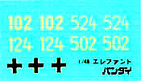

{kind=link}
{kind=link}
{kind=link}
{kind=link}
{kind=link}
{kind=link}
{kind=link}
{kind=link}
{kind=link}

{kind=link}
{kind=link}
{kind=link}
You may click on the small images above to view larger pictures
Bandai 1/48 Pz.Jag. Elefant Sd.Kfz.184
Kit #3
Collector’s Market Value $26.00
Images and text Copyright © 2006 by Matt Swan
Developmental Background
Hitler was in a big hurry to find a new method to deliver the large 8.8cm KWK L/71 long barreled cannon to the battle field and was not satisfied with what he was seeing in the Porsche and Henschel designed Tiger tanks. The German army desperately needed firepower on the Eastern front so the Porsche version of the Tiger chassis was chosen to carry these large cannon into battle and would also feature 200mm of frontal armor to defend itself from Russian tanks. Alket was chosen to design and produce this new weapon designated Ferdinand after its designed Dr. Ferdinand Porsche. While the Porsche chassis was used for the basis of this tank things were moved around quite a bit, the two Maybach water cooled engines were shifted to the center of the hull and connected to large generators powering two large electric motors located in the lower rear hull. Twin radiator and fan assemblies were mounted directly behind the driver’s compartment to cool the powerplants.
The 8.8cm gun was mounted in an aft superstructure in a limited transverse mount and no secondary armament was designed into the vehicle. The Germans had seriously underestimated the danger of the Russian army and the lack of even a machine gun was to be a serious mistake. Ninety Ferdinands were delivered to the Eastern Front in time for operations in the Kursk offensive yet only forty eight of these were to return. These survivors were immediately retrofitted with front hull machine guns and relabeled “Elefant”. The heavyweight and overstressed suspension and transmission required constant, intensive maintenance and the type displayed poor maneuverability. The remaining units were stationed behind German infantry and were used very effectively to plug holes in the German defense. When used in this manner it was found to be a very accurate and effective weapon able to eliminate an Allied tank at ranges of up to two miles and with the initial 200mm frontal armor reinforced with additional 100mm plates, was very difficult to knock out.
The design of this weapon was very advanced and if developed properly would have resulted in tanks that were cheaper and faster to make and would have required less overall maintenance. It the end it was more of propaganda weapon than an effective main line combat weapon. In all, only ninety were ever produced.
The Kit
Kitted in 1996 this is another one of those “lost” kits that you will never see reissued. They are fairly common to find on internet auction sites and at trade shows. The kit arrives in a standard sized box with four view artwork. Bandai did this kit in both the Porsche and Henschel version and this one obviously is the Porsche kit. We have several sprues of parts inside, most being done in a light tan high pressure injection molded plastic with a single sprue done in olive drab plastic – this sprue covers the crew figures and some minor accessory pieces. Additionally there is one small sprue of pieces which covers ten rounds of 88mm ammunition.
For me the most attractive aspect of the old Bandai kits is the overall level of detail including a full interior. The main gun gondola displays the rough cut edges of the armor plate in a interlocking pattern as would be seen on the actual vehicle, all hatches are able to be modeled open or closed so interior details can be displayed, cooling fan units over the engines can be left unsecured by glue so they can be removed to view the inner workings of the tank. The kit includes a fully detailed crew compartment, gun station, gun and breech and two complete diesel engines. Road wheels and suspension pieces are adequately detailed and the only aspect of the kit that is not completely satisfactory is the vinyl tracks.
During test fitting all the parts mate up nicely. There is no evidence of flash, injector pin markings or sink marks anywhere on the kit. Overall this kit includes one hundred eighty seven pieces.
You may click on the small images above to view larger pictures
Decals and Instructions
Instructions come as a long four panel fold-out. The set that I have is completely done in Japanese which I do not read; it appears to include a brief background on the vehicle followed by a comprehensive parts map. After this come thirteen exploded view construction steps. It appears there are color call-outs throughout these steps but again, all in Japanese. A single panel is devoted to exterior painting, decal placement and includes a couple good black and white pictures of a real Kfz.184. The language issue really does not create a great barrier to building this model, as long as the modeler takes a little time to study the exploded views and does just minimal research on correct painting colors there is no real problem.

Kit decals come as a single small sheet with national markings for one vehicle and unit markings for four. These are probably the most recent Bandai decals I have handled and while the sheet looks reasonable good in hand my previous experience with Bandai decals has not been good. I have found them prone to cracking and silvering quite often. If you plan on using the kit offerings use extreme care and maybe even consider applying them with uncut Future floor polish.
Conclusions
1/48 scale vehicles have often been overlooked by model manufactures and it is only within the last few years that we have seen anything new hitting the market in injection molded 1/48. These old Bandai kits make for a great addition to a 1/48 scale aircraft collection, how many of you really understand how large a P-47 Thunderbolt is in relationship to a tank? In addition nothing hitting the market today even includes the barest level of interior detail where as the Bandai kit has everything there. This is a well engineered kit with an above average level of detail, parts fit well, and instructions (while in Japanese) will allow the modeler to complete the kit with just a little study. The only serious shortcoming is the tracks, I would strongly suggest visiting Track 48 and picking up the replacement tracks they offer designed specifically for this kit. If you like 1/48 aircraft and would like to dabble in a few targets I suggest you take a good look at the entire Bandai line.
Track 48 Replacement Tracks
Probably the most disappointing aspect of all the Bandai armor kits is the use of single piece rubber tracks. Track 48 has come to our rescue, at least for this kit, with a set of replacement resin tracks. These arrive in a small clear hard plastic box with some brief instructions and a small picture showing the tracks installed.
Contained within the package are two complete sets of tracks with each set consisting of two long lengths, to curved sections and three small straight lengths. There is a considerable amount of very fine flash within the drive sprocket holes and along the edges (you may click on the image at the right to view a larger picture). Along one side of each piece are several small pour stubs that are easily removed with a set of sprue cutters and then can be finished off with a fresh razor knife. The fine flash knocks off quite easily with the point of a razor knife, the only thing that makes it time consuming is that each and every hole has to be cleared. Once this is done the tracks are ready to work with. The instructions direct the modeler to place the tracks on the wheels, glue the sections together, remove the tracks and paint them then reattach and complete the assembly. From test fitting it looks like some adjustment will be needed with the length of a least one long section (maybe) but as for the curved sections, they fit very nicely to the drive and idler wheels.
Overall detail is very nice on both sides of the tracks and from comparison to historical images of the Elefant they seem to replicate the look accurately. Just out of curiosity I tried the fit of these tracks to other Bandai tracked vehicles and they DO NOT fit any of the other kits. Bottom line is that should you be building a 1/48 Bandai Kfz-184 you’ll most definitely want to pick up a set of these tracks. In the image below you can see the detail level and the light flash as these have not been cleaned up yet.
5/19/06
I had not planned on actually building this kit right now as I already have four projects on the bench and try to keep myself limited to that number. Unfortunately these new tracks are not leaving me much choice as I really want to see how they look on the completed model. Fighting the urge is pretty much useless so I’m just going to jump right in. After a little consideration of the building process I have decided to paint and build the running gear first, install the wheels and interior then build the upper hull. Working in this manner will mean that I must mask off the wheels and tracks when the final painting stage is reached. Using Model Master Desert Sand I airbrushed the wheels, lower hull and other wheel related parts. The road wheels were then painted with my own mixture of black and white to make a tire black. Once this level of painting was dry the pieces were glued together and some weathering took place. I first laid down a heavy brown wash; let that dry then put on a light black wash. A dry brushing of steel was used over the bolt heads and around some of the raised details. Now the wheels can be attached to the axels.
While the wheels are drying I’ll start work on the interior details. The lower hull interior is airbrushed with a very light gray and set aside. The engines are assembled and I must say – these are some fairly well detailed pieces. It’s almost a shame that very little of them will be visible once completed. The basic engine is done with flat black; the large generator is done with RLM-66, exhaust manifolds with rust and other details with steel. The completed engine was dry brushed with silver then washed with a medium gray sludge wash.
Working in the driver’s compartment the basic seats are done with the light gray then leather is applied for the padded areas, same is done with the gun loader’s seat. Radio boxes are done with black, details are picked out with white, yellow and red then they are dry brushed with some silver. The electric motors in the aft compartment and the reciprocating brakes (?) up from are both done with RLM-66. The kit includes a selection of 88mm ammo which was airbrushed with brass then the heads were done with burnt iron before being super glued into the shell racks. Fuel tanks were painted with Field Gray and all these interior parts were set aside while the now dry road wheels are installed. Once the wheels were installed all the interior components can be placed. Before I close this up I’m going to dirty it up a bit but for now the lower half of this beast is coming together fairly nicely. I’ve started assembly of the cannon and that is just sitting in place at the moment.
You may click on the small images above to view larger pictures
6/24/06
I finished painting the interior portion of the cannon and installed it then turned my attention to the crew figures. I needed to paint and install the driver before I could attach the front cover plate. The central cover plate was simply laid in place then the main gun armor plate was held in place with a small spot of glue. All open hatches were packed with tissue paper and the wheels were masked with more tissue.
The exterior was then painted with armor sand and some RLM 82 was used to make the camouflage pattern. Once this dried the tissue was removed and the main cover could be lifted off so some brush touch-up could happen. Next I’ll start placing the resin tracks and add some wash to the upper deck area.
Cleaning up the tracks is very time consuming, there is only very light flash but it is inside nearly every sprocket hole along the entire length of the track and every hole must be cleared with the tip of a razor knife. Once this is done the tracks are airbrushed with Gunze-Sangyo Burnt Iron and allowed to dry. Next they are dry brushed with steel and washed with a dirty brown sludge wash. Each piece is test fit and adjusted by being dipped in a bowl of hot water. When I speak of hot water I am taking a cereal bowl, filling it with hot tap water then placing it in the microwave on high for two minutes. This stuff is very hot and around 185 degrees and a quick dip will make the track very pliable without affecting the paint.
8/5/06
Over a period of several days I worked the tracks into place and superglued them down. Track 48 did a very good job of sizing these to fit this kit – it was a perfect fit and the final result compared to what the rubber tracks provided by the kit would have looked like, well worth the effort. One thing I did find is that these tracks offer no forgiveness if you do not get your toothed drive wheels properly aligned when gluing the two halves together. I did not get one perfect back when I started this build and had to shave a few teeth off to get a good finish.
The upper armor plate was pressed onto the tank hull and the armored skirt was placed over the butt of the barrel. Next the model was sealed with Future Floor Polish and the few decals were applied. The Bandai decals had not aged well and developed several splits that gave me lots of grief going on but after some effort they were in place and looked good. I was thankful there were only four decals on this kit. Once dry they were sealed with Future again and allowed to cure. From here I mixed a standard sludge wash and coated the entire model. While it was still wet I took a spray bottle filled with tap water and spritzed the model to soften some of the wash – this was allowed to dry overnight.
Final weathering included dry brushing all raised surfaces that seemed likely to take abuse with some Model Master Steel then sealed with some Polly Scale clear flat. Next a sharpened stick of brown pastel chalk was used to create various rust stains running down from bolt heads and welds. More chalk, ground this time, was applied with an eye-shadow swab around the fenders and over the previously applied rust stains. Some gray ground pastel chalk was rubbed over the engine exhaust plates to simulate the effects of both heat and exhaust staining. The whip aerial was made from stretched sprue, the R75 with sidecar that the model is displayed with is another Bandai kit while the ground infantry are figures from the Tamiya German Infantry set. The upper armor plate cannot really be removed for viewing however the front top cover plate is not secured and can be removed to view the front interior details.
You may click on the small images above to view larger pictures
 I would like to thank Garfield Ingram and Track 48 for the contribution of the review sample of resin tracks and would strongly recommend that should you be planning on building this kit, get these tracks, you be glad you did.
I would like to thank Garfield Ingram and Track 48 for the contribution of the review sample of resin tracks and would strongly recommend that should you be planning on building this kit, get these tracks, you be glad you did.